clear all
set more off
use regional_dataset, clearStata Lab 2: Mapping Growth - Across Space and Time
Purpose
In this lab we will look at comparing maps across time, dealing with breaks, experimenting with colours, loops, and labels.
Set up
As before we will use the regional dataset. Be sure to save this do-file in the same directory as the dataset, and so set your working directory correctly.
Comparing maps over time
Making breaks in the right place is difficult! In the first plot we show regional GDP per capita from 1950. In the second, the same series is shown but for the year 2010. As you can see, because we have set the top level of the breaks too low, only Calabria in Southern Italy shows up on our map!
spmap regional_gdp_cap_1990 using "nutscoord.dta" if year == 1950, id(_ID) fcolor(Blues2) legend(pos(9)) legstyle(2)
title("Regional GDP per Capita - 1950", size(medium))
osize(0.02 ..) ocolor(white ..)
clmethod(custom) clbreaks(0 (2000) 12000)spmap regional_gdp_cap_1990 using "nutscoord.dta" if year == 2010, id(_ID) fcolor(Blues2) legend(pos(9)) legstyle(2)
title("Regional GDP per Capita - 2010", size(medium))
osize(0.02 ..) ocolor(white ..)
clmethod(custom) clbreaks(0 (2000) 12000)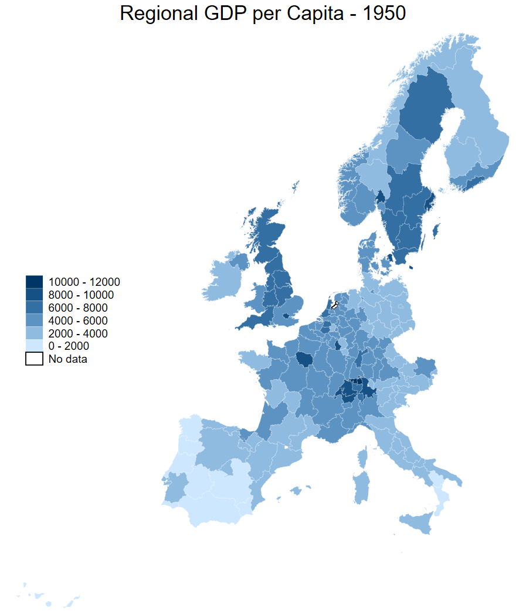
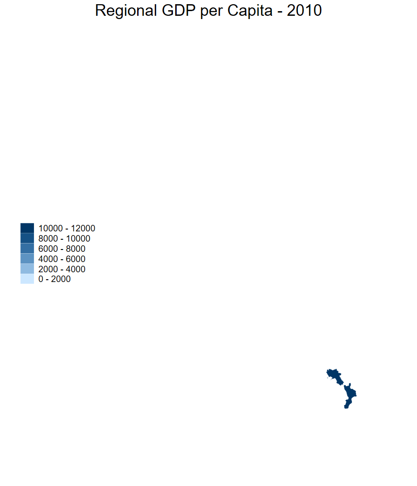
In our side-by-side figure above we encounter a challenge in comparing maps over time - we have both an evolving metric on aggregate (regional GDP per capita increases in real terms from 1950 to 2010) and within regions (with regions containing large cities seeing faster growth than rural areas, for example). As such, choosing the same breaks on both maps is inappropriate.
We can show the evolution of the distribution with two density plots drawn on the same axes.
range atx 0 40000
kdensity regional_gdp_cap_1990 if year == 1950, gen(xp densityp) at(atx) nograph
kdensity regional_gdp_cap_1990 if year == 2010 , gen(xm densitym) at(atx) nograph
line densityp xp
|| line densitym xm, yaxis(2)
||, xtitle("") legend(pos(6) row(1)) ytitle("") ytitle("", axis(2))
legend(order(1 "1950" 2 "2010")) title("Distributions of regional GDP per capita")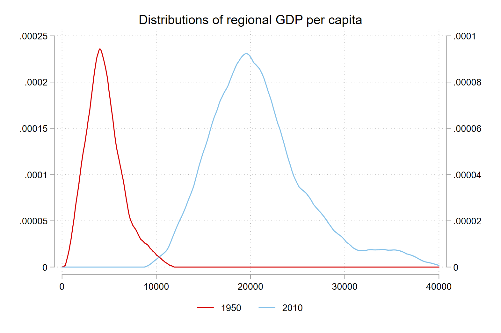
Letting Stata select breaks
Instead of setting bounds based on thresholds that we choose, in the map below, we allow Stata to select the breaks based on the data that we are mapping.
In this case, Stata breaks the distribution up into four brackets, with the lowest containing the observations from the first to 25th percentile, the second from the 26th percentile to the median, and so on. Because clmethod(quantile) is actually the default classification method, we don’t need to specify it in our command.
spmap regional_gdp_cap_1990 using "nutscoord.dta" if year == 1950, id(_ID) fcolor(Blues2) legend(pos(9)) legstyle(2)
title("Regional GDP per Capita - 1950", size(medium))
osize(0.02 ..) ocolor(white ..)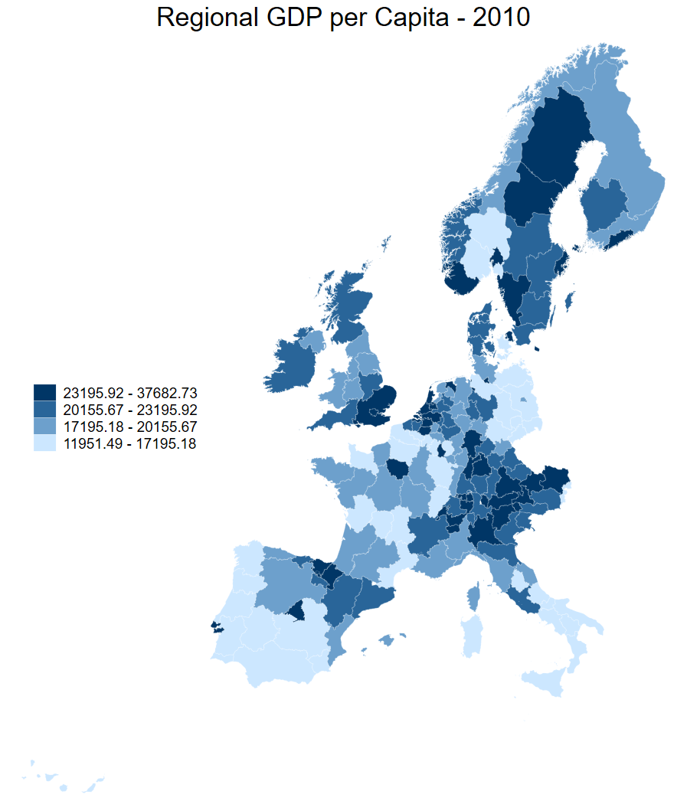
When we do this for two maps showing the same variable in two time periods, we can use quantile breaks to highlight the change between the periods - which regions have seen growth and which have dallied behind.
In the code below, we produce two maps with Stata’s default four bins based on the distribution of regional GDP per capita and compare them.
spmap regional_gdp_cap_1990 using "nutscoord.dta" if year == 1950, id(_ID) fcolor(YlGnBu) legend(pos(9)) legstyle(2)
title("Regional GDP per Capita - 1950", size(medium))
osize(0.02 ..) ocolor(white ..)
clmethod(quantile) name(graph_1950, replace)
spmap regional_gdp_cap_1990 using "nutscoord.dta" if year == 2010, id(_ID) fcolor(YlGnBu) legend(pos(9)) legstyle(2)
title("Regional GDP per Capita - 2010", size(medium))
osize(0.02 ..) ocolor(white ..)
clmethod(quantile) name(graph_2010, replace)
graph combine graph_1950 graph_2010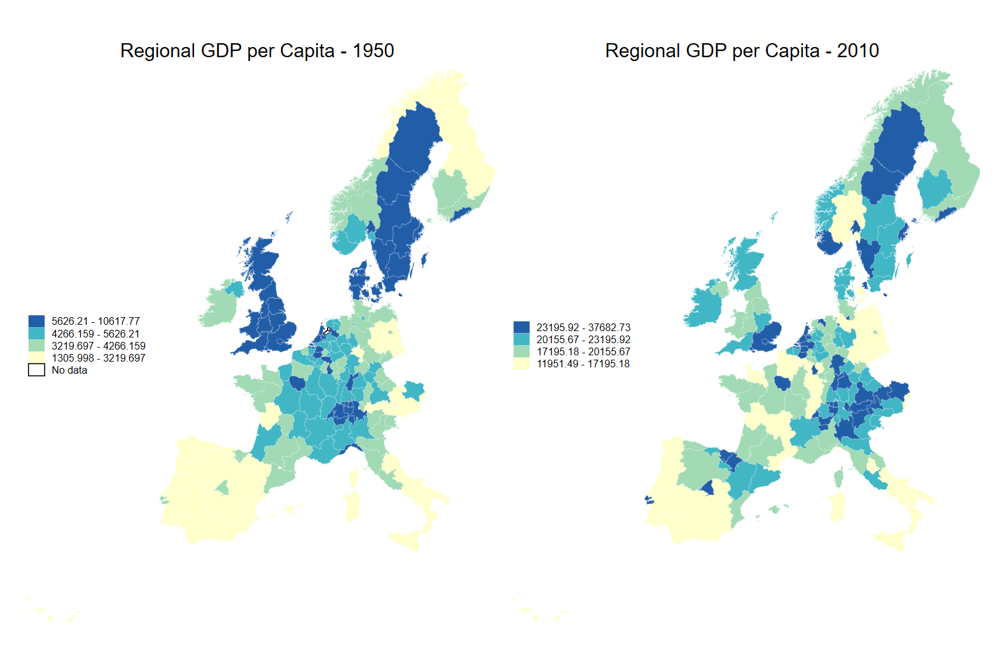
Specifying quantile breaks
We can also increase the number of breaks by specifying the method and number of breaks: clmethod(quantile) clnumber(8).
spmap regional_gdp_cap_1990 using "nutscoord.dta" if year == 1950, id(_ID) fcolor(YlOrRd) legend(pos(9)) legstyle(2)
title("Regional GDP per Capita - 1950", size(medium))
osize(0.02 ..) ocolor(white ..)
clmethod(quantile) clnumber(8)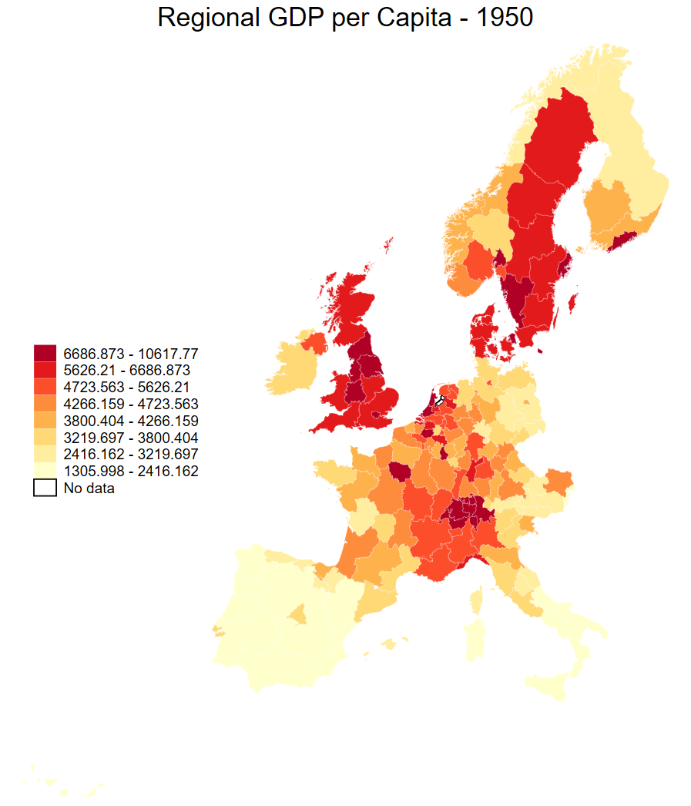
Further, we can specify the exact breaks - in this case showing the regional GDP per capita relative to the average for the countries in our dataset.
Note
You can compare with maps 2.4a and 2.4b in the course book.
spmap relative_gdp_cap_eu using "nutscoord.dta" if year == 1900, id(_ID) fcolor(YlOrRd) legend(pos(9)) legstyle(2)
osize(0.02 ..) ocolor(white ..) title(1900)
clmethod(custom) clbreaks(0 0.8 1 1.2 3)
name(graph_1900, replace)
spmap relative_gdp_cap_eu using "nutscoord.dta" if year == 2010, id(_ID) fcolor(YlOrRd) legend(pos(9)) legstyle(2)
osize(0.02 ..) ocolor(white ..) title(2010)
clmethod(custom) clbreaks(0 0.8 1 1.2 3)
name(graph_2010, replace)
graph combine graph_1900 graph_2010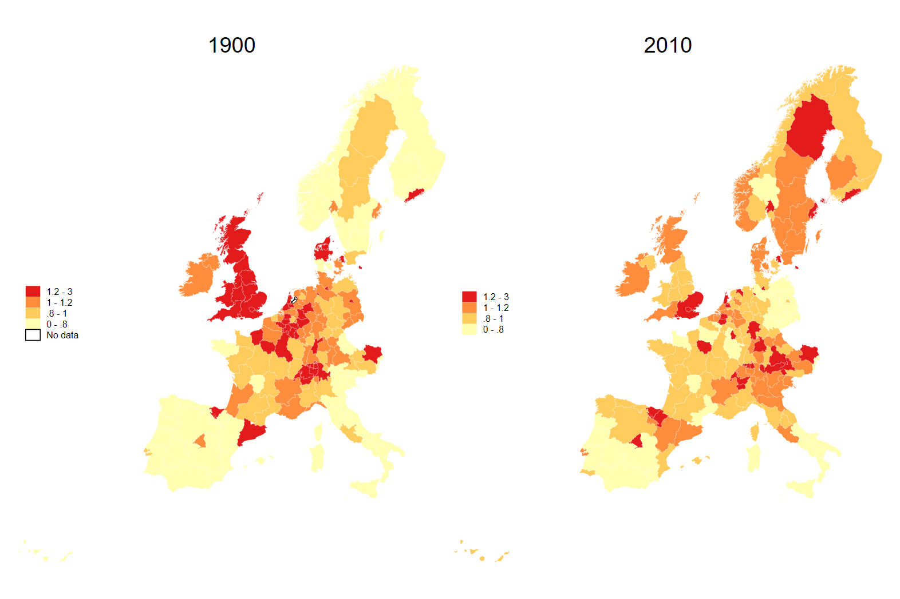
Looking at one country
We can highlight one country by using the if as well as the & operators:
spmap employment_share_industry using "nutscoord.dta"
if year == 1950 & country == "Sweden", id(_ID)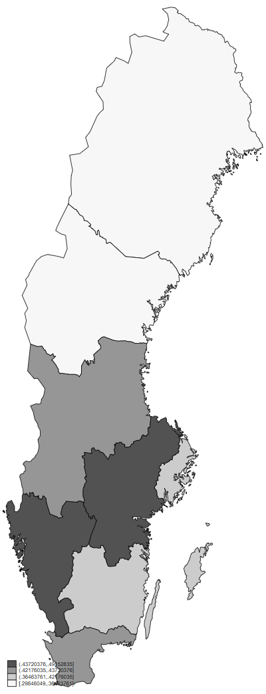
We can generate groups using the | (pronounced OR) operator:
gen group_1 = 0
replace group_1 = 1 if country == "Sweden" | country == "Denmark"
spmap employment_share_industry using "nutscoord.dta" if year == 1950 & group_1 == 1, id(_ID)
fcolor(Blues2) legend(pos(5) size(3.5)) legstyle(2)
title("Employment Share Industry - 1950", size(6))
osize(0.02 ..) ocolor(white ..)
ndfcolor(gray) ndocolor(none ..) ndsize(0.02 ..)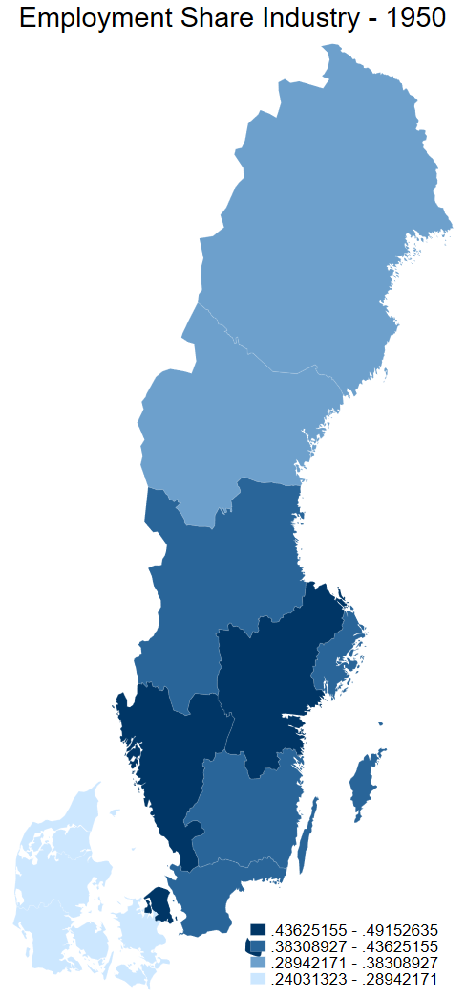
Experimenting with colours
We can choose from a large selection of the spmap colour palettes depending on the context.
Here is the list that you get if you navigate to fcolor after typing
help spmap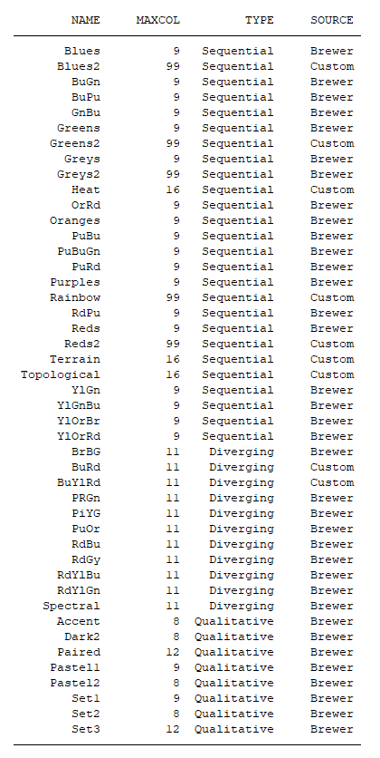
Here is an example of the Heat colour palette, showing national GDP per capita in 1950.
spmap national_gdp_cap_1990 using "nutscoord.dta" if year == 1950, id(_ID) fcolor(Heat)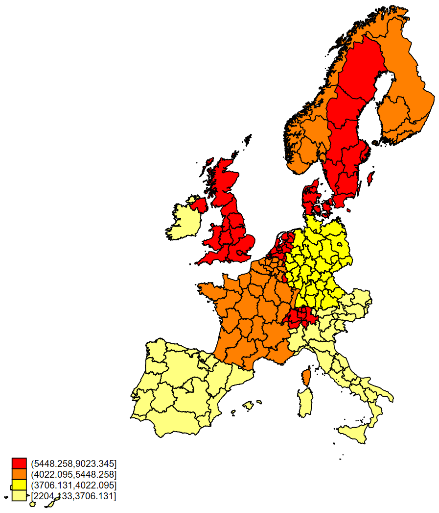
The viridis colour palette is a fantastic sequential palette, here is is used to show the share of employment in industry in 1950.
colorpalette viridis, n(8) nograph
local colors `r(p)''
spmap employment_share_industry using "nutscoord.dta" if year == 1950,
id(_ID) fcolor("`colors'") legstyle(2)
title("1950", size(large))
osize(0.02 ..) ocolor(white ..)
clmethod(custom) clbreaks(0 (0.1) 0.8)
legend(pos(9) region(fcolor(gs15)) size(2.5)) legtitle("1 = 100%")
ndfcolor(gray) ndocolor(white ..) ndsize(0.02 ..)
title("Employment share in industry in 1950")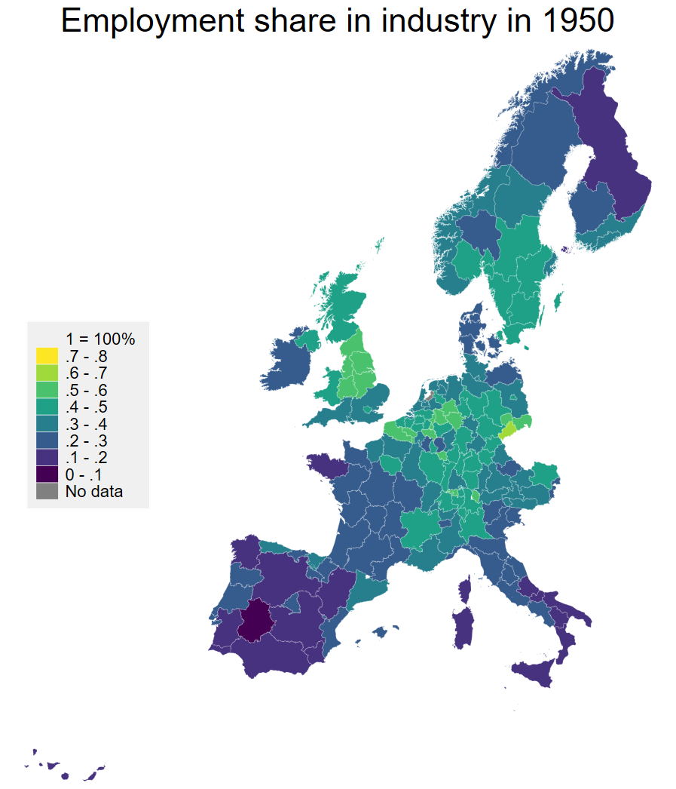
We can also reverse the palette so that high is blue and low is yellow. Finally we can customize the background with the command graphregion(color(navy)) which makes the graph background navy.
Personally I don’t think this adds anything to our understanding - I would stay far away from supurfluous colour but you can do this in Stata.
colorpalette viridis, n(8) nograph reverse
local colors `r(p)''
spmap employment_share_industry using "nutscoord.dta" if year == 1950, id(_ID) fcolor("`colors'") legstyle(2)
title("1950", size(large) color(white))
osize(0.02 ..) ocolor(white ..)
clmethod(custom) clbreaks(0 (0.1) 0.8)
legend(pos(9) region(fcolor(navy)) color(white) size(2.5)) legtitle("1 = 100%")
ndfcolor(gray) ndocolor(white ..) ndsize(0.02 ..) graphregion(color(navy))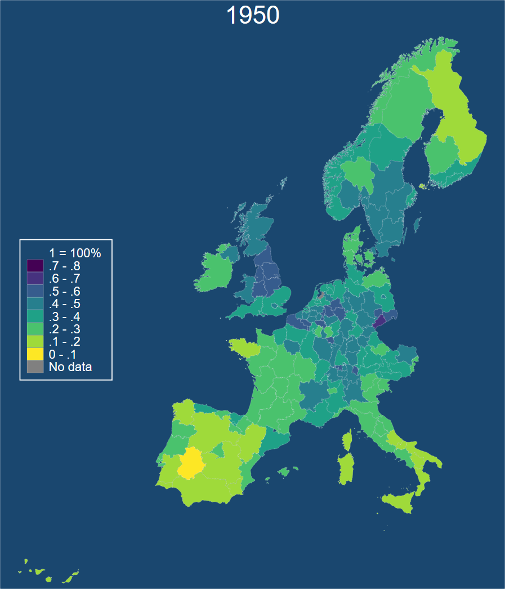
Globals and locals
Why use them?
In Stata, locals and globals are used to create and store values that can be reused in different parts of the program.
locals are temporary variables that are only stored in memory while the program or do-file is running. They can be used to define values that are specific to a certain block of code or section of the program. Once the program or do-file is finished running, the locals are deleted from memory.
globals, on the other hand, are stored in memory until you exit Stata, and can be accessed from any part of the program or do-file. They can be used to define values that need to persist throughout the entire analysis or across different datasets.
These macros are useful to shorten code and to iterate through a loop multiple times.
How to use them
In the code below we make use of locals twice:
foreach var of varlist employment_share_industry employment_share_services {
foreach i of numlist 1950 (10) 1970 {
spmap `var' using "nutscoord.dta" if year == `i', id(_ID)
}
}This Stata code creates a series of maps using the spmap command.
The foreach loop iterates over two variables, employment_share_industry and employment_share_services. For each of these variables, the loop creates a map for three years between 1950 and 1970. Specifically, it creates maps for the years 1950, 1960, and 1970, using a step size of 10.
The spmap command is used to create the maps. The first argument of spmap is the variable to be mapped, which is specified using the varlist option and the local macro var. The second argument is the data file containing the spatial coordinates of the regions, specified as “nutscoord.dta”. The third argument specifies the condition for which the map is created, in this case year == `i', which ensures that only the observations corresponding to the current year of the loop are included. The id(_ID) option tells spmap to use the _ID variable in the dataset as the unique identifier for the regions being mapped.
Example of an output
Here we make a global macro with a variable list of two variables.
Then we loop through the list of variables to make a map for each, and name the map with the variable and the year. Finally we combine them in a single image.
global varlist employment_share_industry employment_share_services
foreach var of varlist $varlist {
foreach i of numlist 1950 (10) 1970 {
spmap `var' using "nutscoord.dta" if year == `i', id(_ID) name(`var'_`i', replace)
}
}graph combine employment_share_industry_1960 employment_share_industry_1970 employment_share_industry_1980 employment_share_industry_1990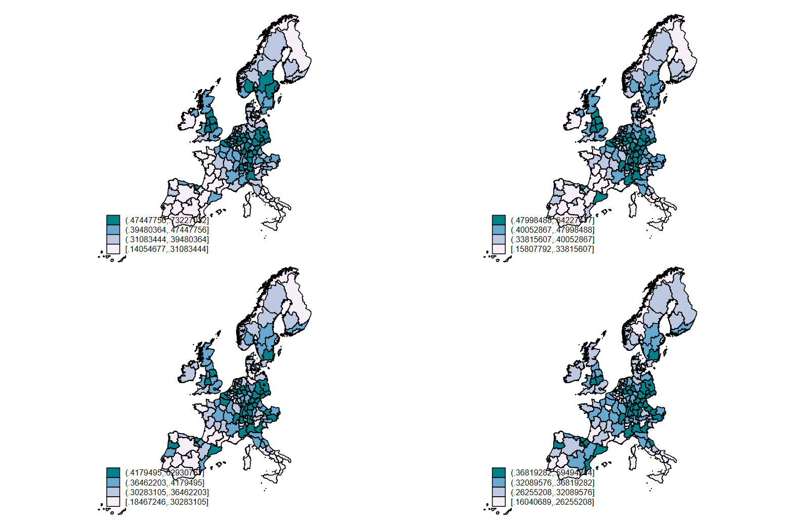
Macros treat strings and numbers differently
Strings need quotes and displaying them works just like other locals.
local a "Hello"
local b "World"
di "`a' `b'"Hello World
Numbers don’t need quotes and you can operate on them with operators, for example, the plus opertor.
local x = 1
local y = 2
di `x' + `y'3
Graph themes
You can make your graphs more visually appealing by choosing some nice schemes. Have a look online and don’t be afraid to download some using the ssc install command.
Here we show the burd and swift_red schemes.
# Prep
replace employment_share_industry = employment_share_industry * 100
replace employment_share_services = employment_share_services * 100
twoway line employment_share_industry employment_share_services year if country == "Sweden",
by(region, note("")) subtitle(, lstyle(none) size(small))
xlabel(1900 (50) 2000) ylabel(0 (40) 80) ytitle(Share in %)
legend(size(vsmall)) scheme(burd)
twoway line employment_share_industry employment_share_services year if country == "Sweden",
by(region, note("")) subtitle(, lstyle(none) size(small))
xlabel(1900 (50) 2000) ylabel(0 (40) 80) ytitle(Share in %)
legend(size(vsmall)) scheme(swift_red)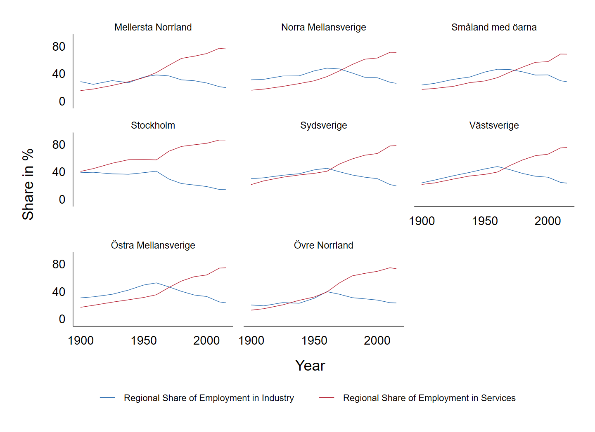
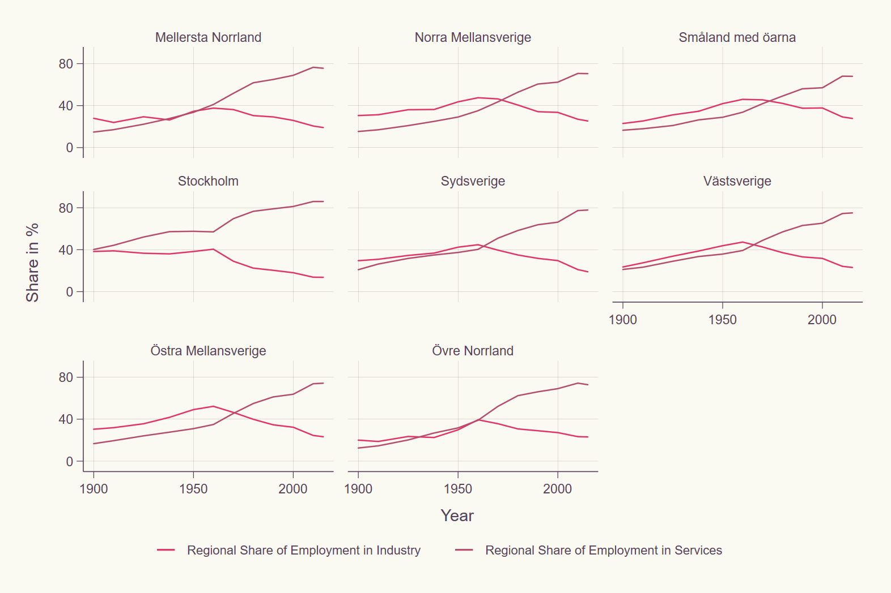
Labelling
We can label regions with a little bit of effort. I would do this maybe just once in your lab reports so that the reader is familiar with the context of your chosen regions.
use nutscoord, clear # by request: to label the regions
bysort _ID: egen mean_x = mean(_X)
bysort _ID: egen mean_y = mean(_Y)
keep _ID mean_x mean_y
duplicates drop
merge 1:m _ID using regional_dataset
keep if _merge == 3
keep if country == "France"
keep _ID mean_x mean_y region
duplicates drop
save labels_regions, replace
use regional_dataset, clear
keep if country == "France"
spmap regional_gdp_cap_1990 using "nutscoord.dta" if year == 1950,
id(_ID) fcolor(Oranges) ndfcolor(gray)
osize(0.02 ..) ocolor(gs8 ..) legend(color(white) pos(7)) legstyle(2)
label(data(labels_regions) xcoord(mean_x) ycoord(mean_y)
label(region) size(*0.5) length(50) color(grey)) graphregion(color(navy))
Tip
To have multiple lines of labels see this Statalist link
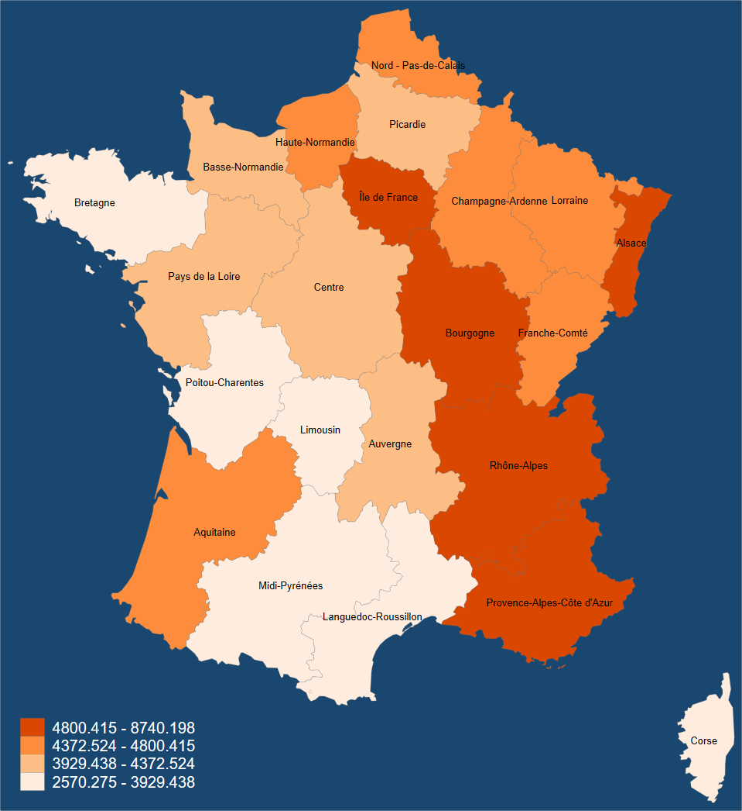
Extra material
bysort country year: egen test_1 = total(regional_gdp_1990) # pay attention to the sorting when calculating totals
bysort country (year): egen test_2 = total(regional_gdp_1990)
br country region year regional_gdp_1990 national_gdp_1990 test_1 test_2
assert test_1 != test_2 # useful to test whether a condition holds (or not)
assert test_1 == national_gdp_1990
replace employment_share_agriculture = employment_share_agriculture * 100
bysort country region (year): gen change_share_agriculture_1 = employment_share_agriculture[_n] - employment_share_agriculture[_n-1] # cf. also the time operators l., f. and d. as well as xtset and tsset- link to world maps; can be converted into Stata format; use e.g. “World Country Polygons - Very High Definition”; already contains some data
- Other World Bank data; can e.g. be matched to the maps
- read these articles (bloomberg and Manuel Gimond) on how to make good maps and discuss.